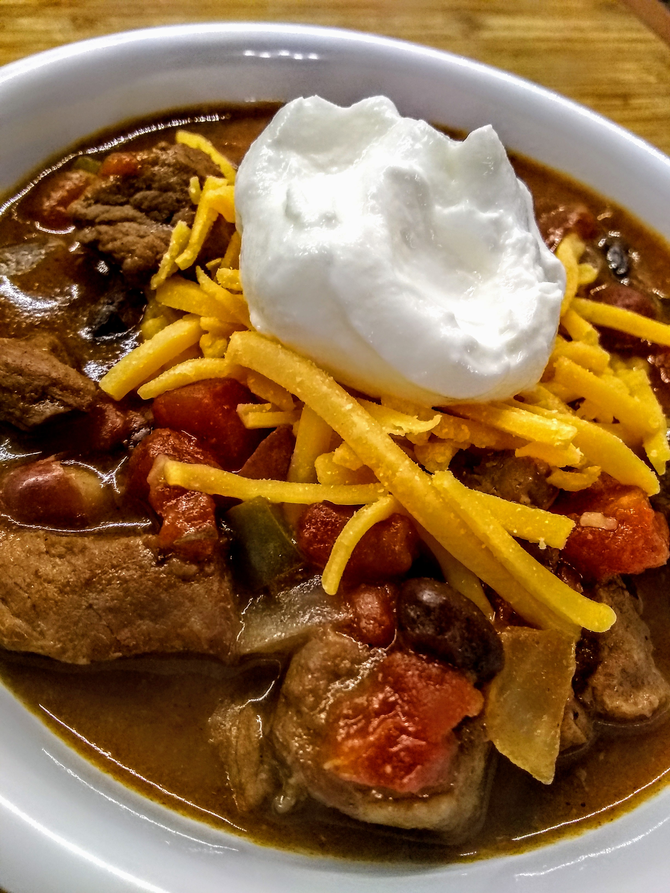

Slow-Cooked Stew Meat Chili

Description
This hearty chili is truly a snap to prepare. After browning the beef and stirring in the spices to give them a slightly toasted flavor, you simply toss everything into a slow cooker and let the mixture simmer all day. Garnish with sour cream, chopped fresh parsley, and chopped red onion.
Per Serving: 268 calories; protein 15.6g; carbohydrates 30.4g; fat 9.3g; cholesterol 23.4mg; sodium 966.9mg.
Ingredients
- 1 1/2 tbsp vegetable oil
- 3/4 lb cubed beef stew meat
- 2 tbsp chili powder
- 1 tspn ground cumin
- 2 tbsp AP flour
- 1 (28oz) can diced tomatoes
- 1 (16oz) can black beans, rinsed and drained
- 1 (16oz) can kidney beans, rinsed and drained
- 1 3/4 cups beef broth, divided
- 1 large white onion, chopped
- 1 small green or red bell pepper, chopped
- 1/4 cup chopped fresh parsley
- 2 tbsp barbecue sauce
- 1 1/2 tbsp brown sugar
- 5 cloves garlic, minced
- 3/4 tspn salt
Steps
- Heat oil in a large skillet over medium-high heat. Add stew meat and brown for 2 minutes, stirring often. Add chili powder and cumin; cook and stir until fragrant, about 1 minute. Stir in flour and cook for 1 minute more. Transfer meat to a large slow cooker.
- Add diced tomatoes, black beans, kidney beans, 1 1/2 cups beef broth, onion, bell pepper, parsley, barbecue sauce, brown sugar, garlic, and salt to the slow cooker; stir until well combined.
- Cover and cook on Low, stirring occasionally, until beef is tender, 6 to 8 hours. Thin the chili with remaining beef broth as it cooks, if consistency is too thick.